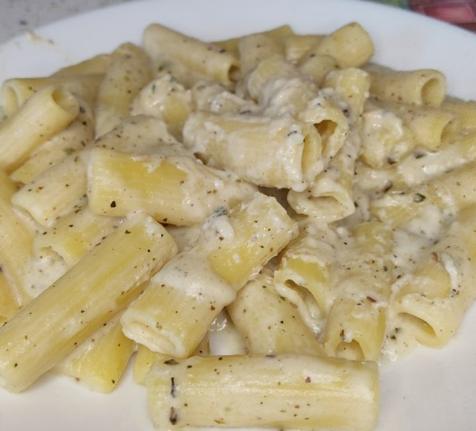

Here are some of my most popular recipes.
I hope you try some of them yourself, I'm sure that you will like them!
PROTEIN BOUNTY JELLY
INGREDIENTS:
20g Gelatine
20g Cocoa Powder
15g Protein Powder
Sweetener
500ml Water in total
-
CREAM:
10g Oat Flour
20g Coconut Flavoured Protein Powder
Sweetener
100ml Water
-
TOPPINGS:
5g Coconut Flakes
-
METHOD:
1) Bloom the gelatin in 50ml Water
2) Add 50ml Boiling Water, cocoa powder, protein powder and sweetener then stir well
3) Add 400ml Cold Water and stir again
4) Let it set in the Fridge for 4-5h
5) Mix the cream ingredients together in a sauce pan and bring to simmer
6) Cook until thickens up, then transfer it into a bowl and let it cool completely
6) Add the cream and the coconut on the jelly and Enjoy! 😋
-
•CALORIES:241
•CARBS:10g
•FAT:4g
•PROTEIN:39g
PEANUT BUTTER PROTEIN COOKIE
INGREDIENTS:
10g Flour (White/Oat flour)
15g Protein Powder (I used PB & Vanilla flavour)
3g Baking Powder
Sweetener + Pinch of Salt
50g Low Fat Greek Yogurt
5g Peanut Butter
-
METHOD:
1) Mix the dry ingredients first
2) Add the wet ingredients & mix well
3) Pour the mixture in a pan layered with baking paper
4) Bake in an oven pre-heated on 200°C for 5min
5) Let it cool and Enjoy! 😋 (Recommend you to dip it in coffee when eating)
-
•CALORIES:124
•CARBS:9g
•FAT:5g
•PROTEIN:17g
PROTEIN OATMEAL

INGREDIENTS:
80g Oats
10g Flax Meal
15g Protein Powder
Sweetener(optional)
300ml Water + 30ml Milk
+ Pinch of Salt
-
TOPPINGS(optional):
Fruit of choice
Peanut Butter
Chocolate
-
METHOD:
1)Add the Flax Meal, Oats and the liquid into a sauce pan
2) Add them on a stove top, bring them to a boil and then lower to simmer
3) Stir every few minutes until almost all water is absorbed
4) When almost done stir in the protein powder and take it off the heat
5)Cover it with a lid and let it sit for 5min
6)Add the toppings and Enjoy!
-
•CALORIES:389
•CARBS:59g
•FAT:9g
•PROTEIN:30g
PROTEIN PIZZA
INGREDIENTS:
DOUGH:
100g Flour (Pizza flour or Bread flour recommended)
70g Water
2g Yeast
Pinch of Sugar
1-2g Salt
-
SAUCE:
50g Pure Tomato
Oregano
Basil
Salt
Pepper
Pinch of Salt, Sugar and Pepper
2ml Vinegar
Water (as much as needed)
-
TOPPINGS:
70g Grated Cheese (any type of Hard Cheese works, try to get a lower fat one)
70g Ham
50g Low Fat Ricotta
1/2 Chopped Green Pepper
50g Tomato Slices
-
METHOD:
1) Mix the dough ingredients, let it sit for 1h
2) Then with wet hands do stretch & fold every 15-30min for 3-5 times (in-between folds keep the dough covered in a container in an oven with the light turned on)
3) Shape the Dough into a Ball and put it into a covered container
4) Let it sit for a final rise on room temperature for 1h
5) Shape the dough into a very thin crust (this needs practice)
6) Pre-bake it for 2min into an oven already heated up to the highest temperature
7) Add the cheese, pepper and tomato then bake it for 2-3 more minutes
8) Add the Ham & Ricotta
9) Enjoy 😋
-
CALORIES:656
CARBS:76g
FAT:18g
PROTEIN:49g
QUATTRO FORMAGGI PASTA

INGREDIENTS:
100g Pasta of choice
100ml Milk
300ml Water
•Cheese & Seasonings:
Salt, Pepper, Basil, Oregano & Garlic Powder
60g Grated Cheese (any type of Hard Cheese works, try to get a lower fat one)
30g Processed Cheese
15g Gorgonzola
15g Parmigiano
-
METHOD:
1) Add the pasta, milk and water in a sauce pan, place on the stove and bring to boil
2) Lower to simmer and stir every min until almost all the liquid is absorbed
3) Turn off the heat and add all the cheese
4) Stir until it's melted
5) Serve & Enjoy 😋
-
CALORIES:612
CARBS:72g
FAT:21g
PROTEIN:43g